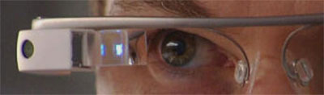

Clique sobre as áreas destacadas em vermelho

De acordo com fontes próximas do Google, os óculos vão contar com uma pequena tela de LCD ou AMOLED na parte superior e em frente aos olhos do usuário. Com o uso de uma câmera e GPS, você pode se situar, assim como selecionar opções com o movimento da cabeça.

Com o Google Glass será possível tirar fotos com até 5 megapixels e gravar vídeos com 720 linhas de resolução. Os primeiros vídeos e fotos capturados com o aparelho já começaram a circular pela rede, mas até agora ninguém tem muitas informações técnicas.
Quem pensa que para comandar o Google Glass vai precisar de teclado e mouse, se engana redondamente. O dispositivo vem com vários tipos de sensores e microfones embutidos. Assim, para dar um comando, basta falar ou passar o dedo na lateral do óculos.


Segundo a própria Google, o Glass virá com uma bateria que tem autonomia suficiente para durar um dia inteiro. Apenas algumas atividades como videoconferências e longas filmagens vão exigir um pouco mais. Além disso ele vem com WiFi, Bluetooth, 3G/4G e muito mais.